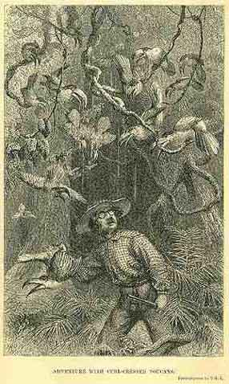

|  | From H.W. Bates. 1863. The Naturalist on the River Amazons. (Now available online at Project Gutenberg. See also Bates (1863) On Heliconius). Vol II. p. 344: Adventure with Toucans "None of the Arrassarís, to my knowledge, make a yelping noise like that uttered by the larger Toucans (Ramphastos); the notes of the curl-crested species are very singular, resembling the croaking of frogs. I had an amusing adventure one day with these birds. I had shot one from a rather high tree in a dark glen in the forest, and leaving my gun leaning against a tree-trunk in the pathway, went into the thicket where the bird had fallen, to secure my booty. It was only wounded, and on my attempting to seize it, it set up a loud scream. In an instant, as if by magic, the shady nook seemed alive with these birds, although there was certainly none visible when I entered the thicket. They descended towards me, hopping from bough to bough, some of them swinging in the loops and cables of woody lianas, and all croaking and fluttering their wings like so many furies. Had I had a long stick in my hand I could have knocked several of them over. After killing the wounded one I rushed out to fetch my gun, but, the screaming of their companion having ceased, they remounted the trees, and before I could reload, every one of them had disappeared." Note: a version of this
engraving (left) in Bates' book was republished by Amabel Williams-Ellis (1966:
"Darwin’s Moon: A Biography of Alfred Russel Wallace". Blackie, London
& Glasgow), with the protagonist's features accentuated to make him
look like Alfred Russel Wallace, but it is clear from the text above that
it was Bates who had the experience. The only inconsistency is that
artist has depicted a gun in Bates' hand which he did not have when the
toucans were croaking at him from close range. Williams-Ellis' altered
picture was again republished erroneously as a picture of Wallace by Helena
Cronin (1991: "The Ant and the Peacock." Cambridge Univ. Press, Cambridge). Bates was born in Leicester.
He went to the Amazon after meeting Alfred Russel Wallace by accident
in the Leicester Public Library, while Wallace was teaching in the Collegiate School.
In 1847, they decided together that an empirical approach, a collecting
trip "towards solving the problem of origin of species" would reap
scientific dividends. Bibliography: Moon, HP (1976): Henry Walter Bates
F.R.S. 1825-1892. Explorer, scientist and Darwinian. Leicestershire
Museums, Art Galleries and Records Service, Leicester. 101 pages. Bates, HW (1863): The Naturalist on the River Amazons.
|
{kind=link}